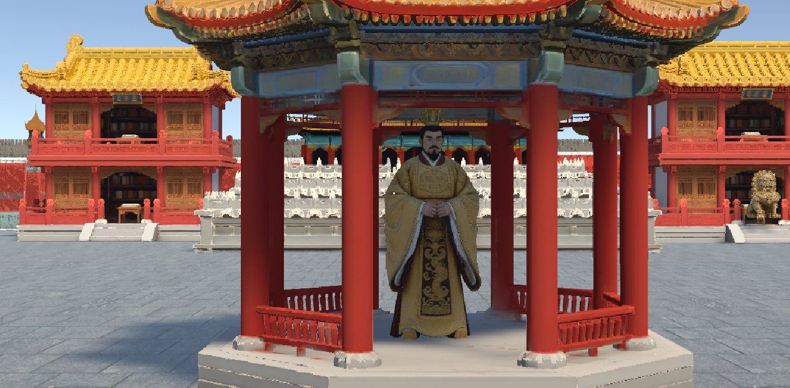

大胆奴才！一场可怕的风暴将故宫屋顶的神圣守卫吹散。宫殿的阴阳平衡已失，你必须寻回散落的五件遗迹。不得有误！
操作： WASD 移动，鼠标环视。靠近遗迹即可收集。
Bold servant! A terrible storm has scattered the sacred guardians of the Forbidden City. The spiritual balance is broken. You must find all 5 missing relics to restore peace. Do not fail!
Controls: WASD to move, Mouse to look. Walk into relics to collect them.